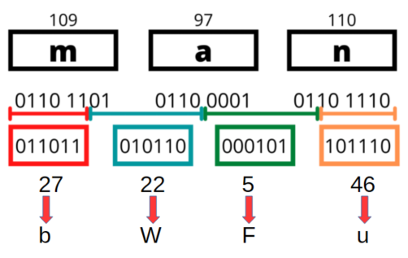
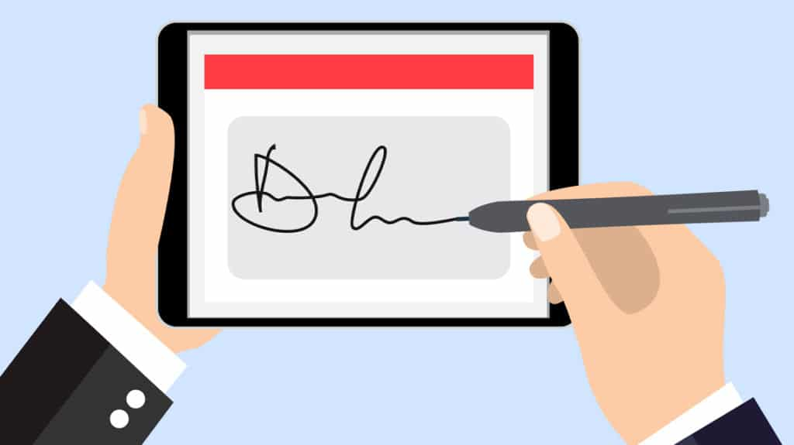
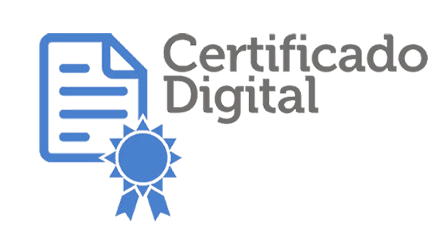
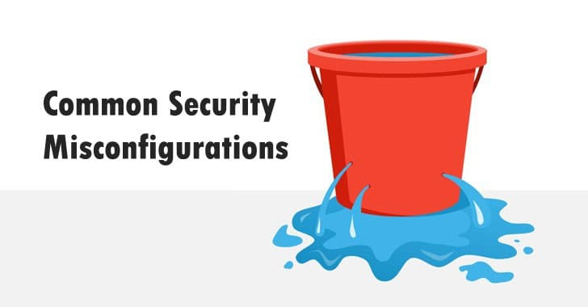

BASE64
Es muy habitual encontrar claves públicas, certificados y otros objetos criptograficos codificadas en Base64, por lo que es conveniente entender que es BASE64, como funciona, donde se puede encontrar, etc...
Conviene distinguir entre la clave y la codificación,
La clave pública es un conjunto de datos binarios. Como esos datos no son fácilmente legibles ni transportables como texto, suelen representarse en Base64.
-----BEGIN PUBLIC KEY----- MIIBIjANBgkqhkiG9w0BAQEFAAOCAQ8AMIIBCgKCAQEAr... ...más caracteres Base64... ...hasta el final... -----END PUBLIC KEY-----
Todo lo que está entre las líneas BEGIN PUBLIC KEY y END PUBLIC KEY es normalmente una representación Base64 de los datos binarios de la clave.
Base64 no es un código secreto ni un sistema de cifrado. Es un método de codificación de datos binarios en texto.
Convierte cualquier dato (una clave binaria, una imagen, un archivo PDF, audio, etc.) en una cadena de caracteres formada por:
Letras mayúsculas: A-Z, Letras minúsculas: a-z, Números: 0-9, Símbolos: + y /, A veces = al final como relleno (padding)
Por ejemplo, el texto: Hola codificado en Base64 se convierte en SG9sYQ==, y puede volver a decodificarse para recuperar el texto original.
Cuando se utiliza: Se utiliza cuando es necesario transmitir o almacenar datos binarios a través de sistemas diseñados para manejar texto.
Por ejemplo: Claves privadas o Claves públicas, que son numeros binarios de miles de bits.
Advertencia: Base64 no cifra ni protege la información. Cualquiera puede decodificarla fácilmente.
Al convertir datos binarios a texto, Base64 añade aproximadamente un 33 % más de tamaño.
Por ejemplo: Archivo original: 300 KB ⤷ Codificado en Base64: ~400 KB
Base64 es una forma estándar de representar datos binarios usando únicamente caracteres de texto para poder almacenarlos o transmitirlos fácilmente.
También es frecuente ver Base64 en: Certificados X.509, Claves públicas SSH, Firmas digitales y Certificados TLS/SSL.
Como se codifica en BASE64
Un ordenador almacena la información en bytes (8 bits). Base64 toma esos bytes y los transforma en grupos de 6 bits
Cada grupo puede tomar un valor entre 0 y 63. Cada valor se asocia a un caracter.
| 0 | 1 | 2 | 3 | 4 | 5 | 6 | 7 | 8 | 9 | 10 | 11 | 12 | 13 | 14 | 15 | 16 | 17 | 18 | 19 | 20 | 21 | 22 | 23 | 24 | 25 |
|---|---|---|---|---|---|---|---|---|---|---|---|---|---|---|---|---|---|---|---|---|---|---|---|---|---|
| A | B | C | D | E | F | G | H | I | J | K | L | M | N | O | P | Q | R | S | T | U | V | W | X | Y | Z |
| 26 | 27 | 28 | 29 | 30 | 31 | 32 | 33 | 34 | 35 | 36 | 37 | 38 | 39 | 40 | 41 | 42 | 43 | 44 | 45 | 46 | 47 | 48 | 49 | 50 | 51 |
| a | b | c | d | e | f | g | h | i | j | k | l | m | n | o | p | q | r | s | t | u | v | w | x | y | z |
| 52 | 53 | 54 | 55 | 56 | 57 | 58 | 59 | 60 | 61 | 62 | 63 | ||||||||||||||
| 0 | 1 | 2 | 3 | 4 | 5 | 6 | 7 | 8 | 9 | + | / |
Ejemplo completo : codificar "man"
-- En este caso el número de bytes es múltiplo de 3 --
Paso 1: Convertir cada carácter a ASCII y después a binario
m a n → 109 97 110 → 01101101 01100001 01101110
Agrupar bits(hay 24) 011011010110000101101110

Paso 2: Dividir en grupos de 6 bits
011011 010110 000101 101110
Paso 3: Convertir cada grupo a decimal
011011 010110 000101 101110 ⬇️ ⬇️ ⬇️ ⬇️ 27 22 5 46
Paso 4: Buscar en la tabla Base64
27=b 22=W 5=F 46=u → bWFu
Por tanto: man → bWFu
¿Qué pasa cuando no hay 3 bytes completos?
Aquí aparece el famoso "=" (el padding)
Ejemplo: "ma"
Tenemos dos caracteres: m = 01101101 a = 01100001
Juntos: 01101101 01100001 → Son 16 bits, pero BASE64 necesita trabajar con grupos de 24 bits, así que se añaden 8 ceros
01101101 01100001 00000000 Añadir un grupo de 8 ceros 011011010110000100000000 Agrupar 011011 010110 000100 000000 Dividir en grupos de 6 b W E A
➡️ Pero como el último grupo procede de bits añadidos artificialmente, se sustituye por padding =
bWE= ma → bWE=
Ejemplo: "m" → Un único byte: m = 01101101 → Se completan los bits faltantes 01101101 00000000 00000000
Se generan 4 caracteres Base64, pero dos provienen de relleno → Resultado: bQ==
Criptografia Híbrida
La criptografía híbrida es un modelo que combina criptografía asimétrica y criptografía simétrica para aprovechar lo mejor de cada una:
- la asimétrica es segura para intercambiar claves
- la simétrica es rápida para cifrar datos grandes
➡️ Se usa en prácticamente todo Internet moderno (HTTPS, TLS, VPNs, etc.).
criptografía híbrida = Se combinan ambas: Usas criptografía asimétrica solo para intercambiar una clave simétrica, y luego usas esa clave simétrica para todo lo demás
Cómo funciona paso a paso
Imaginemos una conexión entre cliente (A) y servidor (B)
Paso 1: El cliente indica al servidor que quiere conectar con el. El servidor envía su clave pública al cliente
Paso 2: El cliente genera una clave simétrica ( aleatoria y compleja )
Paso 3: El cliente cifra la clave simétrica. Usa la clave pública del servidor. La envia cifrada al servidor
Paso 4: El servidor la descifra la clave simétrica. Solo el servidor puede hacerlo porque tiene la clave privada:
Paso 5: Comunicación simétrica. A partir de aquí ambos comparten clave_sesión y todo el tráfico se cifra con un algoritmo simétrico (AES, ChaCha20, etc.)
Firma electrónica vs Firma digital
Aunque suenan similares, firma digital y firma electrónica no son exactamente lo mismo. La diferencia principal está en el nivel de seguridad y en la tecnología que usan
🖊️ Firma electrónica
Es un concepto amplio dentro del derecho digital. Incluye cualquier método electrónico que sirva para aceptar o firmar un documento.

- Puede ser algo tan simple como
- Escribir tu nombre en un formulario online
- Marcar una casilla de “acepto”
- Dibujar tu firma con el mouse o en una pantalla táctil
Es válida legalmente en muchos países, pero tiene menor nivel de seguridad, porque no siempre garantiza quién firmó realmente.
-- la legislación europea establece que no se pueden negar efectos jurídicos a una firma únicamente por ser electrónica -- .
Sin embargo, si surge un conflicto (por ejemplo, alguien niega haber aceptado un contrato), una firma electrónica simple puede resultar más difícil de probar.
Cuantas menos evidencias existan sobre quién firmó y cómo lo hizo, más complicada será su defensa.
- Se distinguen tres niveles
- Firma electrónica simple → válida, pero con menor fuerza probatoria.
==> Haces clic en «Acepto el contrato». - Firma electrónica avanzada → permite identificar mejor al firmante y detectar modificaciones.
==> Recibes un SMS con un código único y firmas a través de una plataforma que registra tu identidad, fecha, hora e IP. - Firma electrónica cualificada → tiene el nivel más alto y, jurídicamente, es equivalente a la firma manuscrita en toda la UE.
==> Utilizas tu certificado digital cualificado o el DNIe para firmar electrónicamente el contrato.
🔐 Firma digital
Es un tipo específico de firma electrónica, pero mucho más segura. Se basa en tecnologías de criptografía.
La firma digital real es invisible. No tiene forma visual, No es un trazo ni una imagen.
Son solo datos matemáticos (hash cifrado + certificado), por eso no hay “dibujos reales” que la representen fielmente.
Ejemplo parcial de codigo anexado al documento que se firma -----BEGIN PKCS7----- MIIG... (muchos caracteres) ...Qm9uZCBkaWdpdGFs... -----END PKCS7-----

Sin embargo, muchos programas permiten añadir una apariencia visual para indicar que el documento está firmado con firma digital.
Esta imagen no es la firma digital. Es solo una representación visual para indicar que existe.
- De hecho
- Un documento puede estar firmado digitalmente sin mostrar ningún sello o imagen visible.
- También puede mostrar una imagen de una firma manuscrita y no estar firmado digitalmente en absoluto.
- El uso de certificados digitales emitidos por entidades certificadoras garantiza:
- Identidad del firmante
- Integridad del documento (no ha sido alterado)
- No repudio (el firmante no puede negar que firmó)
Es la que se usa en trámites oficiales, contratos importantes y documentos legales de alto valor.
- En resumen
- Toda firma digital es electrónica,
- pero no toda firma electrónica es digital.
HASH y Firma Digital
La relación entre hash y firma digital es fundamental: la firma digital no se aplica directamente sobre el documento completo, sino sobre su huella criptográfica (hash).
¿Qué es un HASH?
Un hash es una función matemática que transforma cualquier dato (texto, archivo, etc.) en una cadena única de caracteres. También se le suele llamar funcion RESUMEN o DIGEST
- Siempre genera una salida del mismo tamaño, sin importar el tamaño del archivo de entrada.
- Un pequeño cambio en los datos produce un hash completamente distinto.
- La función hash NO es reversible.(computacionalmente Intratable)
- Ejemplo de hash
md5("SAD-ASIX2") -> 786cf5f44e74ef51bd7ec7cdf8950e22
Pero.. md5("SAD-ASIX1") -> 834743d3c372fa45434f72665c309c0e
Se utiliza para verificar la integridad de los datos. Si el hash cambia, los datos han sido modificados.
Ejemplo comparativo: La letra del DNI
La letra del DNI puede presentarse como una forma sencilla de control de integridad. (“resumen” calculado a partir de unos datos)
La idea fundamental coincide con la de un hash: A partir de unos datos se calcula un valor de comprobación que permite detectar modificaciones.
En el DNI:
datos originales → número;
valor de control → letra.
Si alguien cambia el número y no recalcula la letra, la inconsistencia se detecta.
Otros mecanismos de ejemplo son: checksums; CRC; dígitos de control bancarios; ISBN; códigos EAN.
Usos comunes de las funciones HASH
- Verificación de integridad: Comprobar si un archivo ha sido modificado comparando su hash original con uno nuevo.
- Almacenamiento seguro de contraseñas: Las contraseñas no se guardan como texto plano, sino como hashes. Así, aunque se acceda a la base de datos, no se conoce la contraseña real.
- Identificación de archivos: Sistemas de gestión de archivos o descargas (como torrents) usan hashes para identificar archivos únicos y evitar duplicados.
- Firmas digitales: El hash es la base sobre la que se aplica la clave privada para generar una firma digital.
- Estructuras de datos: En programación, estructuras como las tablas hash permiten acceder rápidamente a datos usando claves.
- Blockchain y criptomonedas: Cada bloque contiene el hash del anterior. Así se garantiza la integridad de toda la cadena de bloques.
- Generación de identificadores únicos: Para identificar usuarios, sesiones, transacciones, etc., de forma segura y eficiente.
🔢 Tipos de Funciones Hash
Existen varias funciones hash, cada una con diferentes niveles de seguridad y velocidad.
- MD5 (Message Digest 5):
➤ Genera hashes de 128 bits (32 caracteres hexadecimales).
⚠️ Ya no es considerado seguro para criptografía, pero aún se usa para integridad de archivos. - SHA-1 (Secure Hash Algorithm 1):
➤ Produce hashes de 160 bits.
⚠️ También ha sido vulnerado, por lo que se desaconseja su uso en seguridad crítica. - SHA-256:
➤ Parte de la familia SHA-2.
➤ Genera hashes de 256 bits (64 caracteres hexadecimales).
Muy utilizado en blockchain y seguridad moderna. - SHA-512:
➤ Similar a SHA-256 pero con una longitud de 512 bits.
➤ Más seguro pero también más pesado computacionalmente. - BLAKE2:
➤ Más rápido que SHA-2 y con buena seguridad.
➤ Alternativa moderna recomendada en muchos entornos. - RIPEMD-160:
➤ Usado en aplicaciones como Bitcoin junto con SHA-256.
No todas las funciones hash son adecuadas para seguridad. Para almacenar contraseñas deben usarse funciones de hash lentas y resistentes a ataques por fuerza bruta y hardware especializado, como
- bcrypt
- scrypt
- Argon2 (ganador del Password Hashing Competition)
- yescrypt
✍️ ¿Qué es una Firma Digital?
Una firma digital es un mecanismo criptográfico que garantiza que un documento:
- No ha sido modificado (integridad).
- Proviene del remitente esperado (autenticidad).
- No puede ser repudiado (no repudio).
¿Como se usa?
Para crearla se usan:
- El hash del documento.
- Una clave privada del emisor del documento, que cifra ese hash.
- Este hash cifrado es la firma
El receptor puede verificar la firma usando la clave pública del emisor.
- El receptor
- Calcula el hash del documento recibido
- Descifra la firma con la clave pública
- Compara ambos hashes
Si coinciden → el documento es auténtico y no ha sido modificado.
En resumen:
- Hash: Detecta si un archivo ha sido alterado.
- Firma digital: Garantiza que el archivo es original y viene de quien dice enviarlo.
⚠️⚠️⚠️ Pero...., quien dice enviarlo, ¿ es realmente quien dice que es ?
Este problema se resuelve con los Certificados Digitales

Certificados Digitales
Un certificado digital es como una "credencial digital" que identifica de forma segura a una persona, empresa o servidor en Internet.
¿Qué contiene un certificado digital?
- 👤 Nombre del titular
- 🔑 Clave pública del titular
- 🧾 Información de la entidad que lo emite (Autoridad de Certificación)
- ✍️ Firma digital de la Autoridad de Certificación (CA)
- 📅 Fecha de emisión y caducidad
- Otros datos de interes...
Un certificado digital puede encontrarse almacenado en distintos formatos y soportes
- Archivos de certificado: .p12, .pfx, .cer, .crt, .pem.
- Tarjetas criptográficas o tarjetas inteligentes (smart cards).
- Tokens USB criptográficos (dispositivos similares a una memoria USB, pero diseñados para proteger las claves privadas).
- Módulos de seguridad hardware (HSM) utilizados en entornos empresariales.
- Almacenes de certificados del sistema operativo o del navegador.
🏢 ¿Qué es una Autoridad de Certificación (CA)?
Es una entidad confiable que se encarga de emitir y validar los certificados digitales. Ejemplos conocidos:
- 🏛️ FNMT – Fábrica Nacional de Moneda y Timbre
- ACCV – Autoritat de Certificació de la Comunitat Valenciana
- Entrust Root Certification Authority (dni-e)
- Izenpe - Autoridad vasca de certificación.
- CATCert (fusionada en AOC)
- Camerfirma (Cámaras de comercio)
- ANCERT - Autoridad de Certificación del Consejo General del Notariado
- Let's Encrypt
- DigiCert
- GlobalSign
- Y mas....
⚠️ Normalmente, todas estas CA se suministran ya instaladas en los Sistemas Operativos, pero se pueden añadir mas...
¿Para qué se usan los certificados digitales?
- Cifrado de comunicaciones: Protegen la información entre tu navegador y un sitio web (HTTPS).
- Autenticación: Verifican que estás hablando con el servidor legítimo, no con un impostor.
- Firmas digitales: Aseguran que un documento electrónico no ha sido alterado.
- Gestión de identidad: En empresas o gobiernos, se usan para acceder a servicios seguros.
¿Cómo funciona?
- 1️⃣ El servidor envía su certificado digital al navegador.
- 2️⃣ El navegador comprueba si la CA es de confianza.
- 3️⃣ Si todo es válido, se establece una conexión cifrada.
En resumen:
Un certificado digital permite cifrar, autenticar y verificar en el mundo digital de forma segura.
Y para que un certificado digital funcione necesitamos una PKI (Infraestructura de Clave Pública)🏛️ ¿Qué es una PKI (Public Key Infrastructure) ?
La Infraestructura de Clave Pública o PKI es un sistema que permite crear, gestionar, distribuir y revocar certificados digitales y claves públicas.
En pocas palabras, es el conjunto de tecnologías, políticas y procedimientos que hacen posible la seguridad en Internet.
Componentes principales de una PKI:
- Autoridad de Certificación (CA): Emite y firma certificados digitales.
- Autoridad de Registro (RA): Verifica la identidad antes de emitir certificados (actúa como filtro para la CA).
- Repositorio de certificados: Lugar donde se almacenan y consultan los certificados emitidos.
- Listas de revocación (CRL): Informan si un certificado ya no es válido.
- Pareja de claves: Cada usuario tiene una clave pública y una clave privada.
¿Cómo funciona una PKI?
- 1️⃣ Un usuario solicita un certificado a la CA (por medio de la RA).
- 2️⃣ La RA verifica la identidad del solicitante.
- 3️⃣ Si todo es correcto, la CA genera y firma un certificado digital con la clave pública del usuario.
- 4️⃣ El usuario puede usar su certificado para cifrar, firmar o autenticar.
- 5️⃣ Otros usuarios pueden verificar el certificado consultando la CA.
¿Para qué sirve una PKI?
- Autenticación de usuarios, servidores o dispositivos.
- Cifrado de datos y comunicaciones (por ejemplo HTTPS).
- Firmas digitales de documentos o correos electrónicos.
- Intercambio seguro de claves.
En resumen:
Una PKI hace posible que confiemos en la identidad digital de personas y sitios web, utilizando certificados digitales respaldados por entidades confiables.
Tipos de amenazas en Ciberseguridad
Existen varios tipos de amenazas que pueden comprometer la seguridad de sistemas y datos. Se pueden dividir en dos grandes grupos
- Internas
- Extenas
💣 Amenazas Internas
Riesgos que provienen de empleados o personas con acceso legítimo a los sistemas, que pueden actuar maliciosamente o por descuido.
Tambien denominados Insiders
- Clasificación de Amenazas Internas
- Amenazas internas intencionadas
- Empleados maliciosos: Utilizan sus privilegios y conocimientos de la organización para causar daños intencionados, como filtrar información confidencial
- Externos con acceso interno: Cibercriminales que han logrado acceder a la red o edificio de una organización y la utilizan para causar daños
- Amenazas internas accidentales
- Empleados negligentes: Causan daños no intencionados debido a errores humanos o decisiones equivocadas, como compartir datos confidenciales por error
- Malas prácticas: Por ejemplo, insertar un USB infectado en un ordenador corporativo sin mala intención
Cómo Evitar Amenazas Internas
- Modelo de amenazas: Utiliza el modelado de amenazas para comprender la postura de seguridad de tu organización.
- Principio de privilegios mínimos: Implementa y practica el principio de privilegios mínimos, asegurando que los empleados solo tengan acceso a la información y sistemas necesarios para su trabajo.
- Autenticación segura: Garantiza una autenticación segura para todas las cuentas y sistemas, utilizando métodos como la autenticación multifactor.
- Gestión de cuentas: Elimina o actualiza las cuentas cuando los empleados se vayan de la organización.
- Monitoreo de actividades: Investiga las actividades inusuales y mantén un monitoreo constante de los sistemas para detectar comportamientos sospechosos.
- Educación y concienciación: Capacita a los empleados sobre las mejores prácticas de seguridad y la importancia de seguir los protocolos establecidos.
🚨 Amenazas externas
- Malware: Software malicioso diseñado para dañar o infiltrarse en sistemas. Incluye virus, gusanos, troyanos y spyware.
- Ransomware: Un tipo de malware que encripta los datos de la víctima y exige un rescate para liberarlos.
- BotNets: Grupo de ordenadores infectados y controlados por un atacante de forma remota
- Phishing: Ataques que buscan engañar a las personas para que revelen información confidencial, como contraseñas o datos bancarios, generalmente a través de correos electrónicos falsos.
- Ataques de denegación de servicio (DoS/DDoS): Intentos de hacer que un servicio en línea no esté disponible sobrecargándolo con tráfico falso.
- Ataques Man-in-the-Middle (MitM): Interceptación de comunicaciones entre dos partes para robar o alterar la información transmitida.
- Inyección SQL: Ataques que explotan vulnerabilidades en aplicaciones web para ejecutar comandos SQL maliciosos en la base de datos.
Cómo Evitar Amenazas Internas
- Modelo de amenazas: Utiliza el modelado de amenazas para identificar y comprender las posibles vulnerabilidades y riesgos dentro de tu organización. Esto te ayudará a anticipar y mitigar posibles ataques internos.
- Principio de privilegios mínimos: Asegúrate de que los empleados solo tengan acceso a la información y sistemas necesarios para realizar su trabajo. Limitar los privilegios reduce el riesgo de que datos sensibles sean comprometidos.
- Autenticación segura: Implementa métodos de autenticación robustos, como la autenticación multifactor (MFA), para proteger las cuentas y sistemas. Esto añade una capa adicional de seguridad, dificultando el acceso no autorizado.
- Gestión de cuentas: Mantén un control riguroso sobre las cuentas de usuario. Asegúrate de eliminar o actualizar las cuentas cuando los empleados dejen la organización o cambien de rol.
- Monitoreo de actividades: Realiza un monitoreo constante de las actividades en los sistemas para detectar comportamientos inusuales o sospechosos. Investiga cualquier actividad que parezca fuera de lo común.
- Educación y concienciación: Capacita a los empleados sobre las mejores prácticas de seguridad y la importancia de seguir los protocolos establecidos. La formación continua ayuda a crear una cultura de seguridad dentro de la organización.
🚨 Amenazas externas
- Malware: Software malicioso diseñado para dañar o infiltrarse en sistemas. Incluye virus, gusanos, troyanos y spyware.
- Ransomware: Un tipo de malware que encripta los datos de la víctima y exige un rescate para liberarlos.
- BotNets: Grupo de ordenadores infectados y controlados por un atacante de forma remota
- Phishing: Ataques que buscan engañar a las personas para que revelen información confidencial, como contraseñas o datos bancarios, generalmente a través de correos electrónicos falsos.
- Ataques de denegación de servicio (DoS/DDoS): Intentos de hacer que un servicio en línea no esté disponible sobrecargándolo con tráfico falso.
- Ataques Man-in-the-Middle (MitM): Interceptación de comunicaciones entre dos partes para robar o alterar la información transmitida.
- Inyección SQL: Ataques que explotan vulnerabilidades en aplicaciones web para ejecutar comandos SQL maliciosos en la base de datos.
Ataques a Correo Electrónico
Los ataques a correos electrónicos son una de las formas más comunes de ciberataques hoy en día. Se aprovechan del hecho de que el correo es una herramienta esencial y ampliamente usada, tanto en entornos personales como laborales
1. SPAM
Objetivo: Llenar tu bandeja con mensajes irrelevantes o publicidad.
- Usa filtros anti-spam.
- No respondas a correos desconocidos.
2. Phishing
Objetivo: Robar datos personales suplantando entidades legítimas.
- Verifica el remitente del correo.
- No ingreses datos desde enlaces sospechosos.
3. Virus y Malware
Objetivo: Infectar tu dispositivo mediante archivos adjuntos.
- No abras archivos de remitentes desconocidos.
- Mantén tu antivirus actualizado.
4. Ransomware
Objetivo: Cifrar tus archivos y pedir un rescate.
- Haz copias de seguridad con frecuencia.
- Evita abrir enlaces o archivos sospechosos.
5. Spear Phishing
Objetivo: Ataque personalizado para engañar a personas específicas.
- Confirma instrucciones importantes por otro medio.
6. Business Email Compromise (BEC)
Objetivo: Suplantar ejecutivos para desviar fondos.
- Verifica cambios financieros con llamadas u otros canales.
Consejos Generales
- Activa la autenticación en dos pasos (2FA).
- Usa contraseñas seguras y cámbialas regularmente.
- Capacita a usuarios sobre ciberseguridad.
Origen y autenticidad de aplicaciones
Cuando hablamos del origen y autenticidad de aplicaciones, nos referimos a verificar de dónde proviene una app y si es confiable o legítima antes de instalarla. Esto es fundamental para proteger la seguridad de tus datos y dispositivos
- Fuentes oficiales: Google Play Store, Apple App Store, Microsoft Store, sitios oficiales.
- Fuentes no oficiales (⚠️ riesgo): Tiendas de terceros, archivos APK desconocidos, enlaces por mensajes o redes.
⚠️ Riesgos de Apps de Origen Dudoso
- Instalación de malware o spyware.
- Robo de información personal.
- Acceso no autorizado a tus dispositivos.
Autenticidad de una Aplicación
Para saber si una app es legítima y no una copia modificada:
- Verifica el nombre del desarrollador.
- Observa descargas y reseñas.
- Revisa los permisos solicitados.
- Comprueba certificados digitales.
- Consulta el sitio web oficial.
- Investiga opiniones en foros tecnológicos.
Recomendaciones Generales
- Descarga siempre desde fuentes oficiales / fiables.
- Verifica, si es posible, la firma de verificación, checksum o hash
- Evita apps “mod” o piratas.
- Evitar el sideloading o root/jailbreak
- Activa Play Protect u otros escáneres de seguridad.
- Supervisa los permisos de las apps.
Actualizaciones del SO y Aplicaciones
Las actualizaciones del sistema operativo (SO) y de las aplicaciones son clave para mantener la seguridad, estabilidad y rendimiento de cualquier dispositivo
¿Qué son?
Son mejoras o correcciones para solucionar errores, añadir funciones nuevas, mejorar la seguridad y el rendimiento.
Importancia de Actualizar
- Seguridad: Corrigen vulnerabilidades críticas.
- Rendimiento: Mejoran la velocidad y eficiencia.
- Compatibilidad: Aseguran el buen funcionamiento con otras apps y servicios.
- Nuevas funciones: Acceso a mejoras y herramientas recientes.
⚠️ Riesgos de No Actualizar
- Mayor exposición a virus y ataques.
- Fallas o cierres inesperados en apps.
- Problemas de compatibilidad y lentitud.
Recomendaciones
- Activa las actualizaciones automáticas.
- Verifica actualizaciones de forma regular.
- Mantén suficiente espacio libre en tu dispositivo.
- No ignores los mensajes del sistema.
- Vigila el EOL (End Of Live) del sistema. Migra a versiones con soporte
- En entornos empresariales, activa la supervisión centralizada. Herramientas como WSUS, Intune o Ansible
Software de Detección de Amenazas
¿Qué es?
Es un conjunto de herramientas diseñadas para detectar, bloquear y eliminar amenazas digitales como virus, malware, spyware, ransomware, rootkits, etc.
Tipos de Software de deteccion de amenazas
- Antivirus: Detecta y elimina virus conocidos / Escanea archivos y programas en tiempo real.
- Antivirus de Escritorio
- Antivirus "en linea"
- Analisis de ficheros en linea
- Antivirus portable
- Antivirus Live: Arranca un sistema "limpio", o de rescate
- Antimalware: Defensa contra amenazas más complejas. Detecta malware sofisticado como troyanos, adware o ransomware.
- Firewall: Controla el tráfico de red. Bloquea accesos no autorizados.
- Antispyware: Previene el espionaje de datos. Detectan programas espias
- Herramientas anti-ransomware / detectores - descifradores
- EDR / ED&R (Endpoint Detection & Response) Soluciones avanzadas para empresas. Detecta comportamientos sospechosos en dispositivos
- ATP (Advanced Threat Protection): Efectivo contra amenazas persistentes avanzadas (APT)
- Sandbox: Uso de entornos aislados que simulan un sistema informático con la finalidad de observar el comportamiento de ciertos archivos o programas para detectar acciones maliciosas
🔧 Funciones Comunes
- Escaneo en tiempo real
- Análisis bajo demanda
- Cuarentena de archivos sospechosos
- Actualizaciones automáticas
- Notificaciones de seguridad
Ejemplos Populares
- Windows Defender
- Avast, Bitdefender, Norton
- Malwarebytes, Kaspersky
- CrowdStrike (EDR empresarial)
Recomendaciones
- Activa la protección en tiempo real.
- Actualiza regularmente el software.
- No instales múltiples antivirus a la vez.
- Haz escaneos periódicos.
Métodos de infección
- Explotando una vulnerabilidad
- Ingenieria Social
- Archivo malicioso
- Dispositivo extraible
- Cookies maliciosas
- Keylogger
Sospecha de infección
- ✔ Equipo lento, con errores o se bloquea, sobrecalentamiento, agotamiento de la batería
- ✔ Pantalla azul de la muerte
- ✔ Programas que se abren y se cierran automáticamente
- ✔ Falta de espacio de almacenamiento
- ✔ Ventanas emergentes, barras de herramientas y programas no deseados
- ✔ Correos electrónicos y mensajes que se envían sin tu consentimiento
- ✔ Eliminación de documentos sin tu consentimiento
- ✔ Redirección del navegador a páginas desconocidas
- ✔ Cambio de nombre de documentos (cifrado: ransomware en proceso)
- ✔ Procesos del sistema que acaparan demasiados recursos (administrador de tareas)
📶 Medidas de Seguridad en Redes Inalámbricas (WiFi)
¿Por qué es importante proteger tu red Wi-Fi?
Para evitar que extraños usen tu red, roben tus datos o comprometan tus dispositivos conectados.

misconfiguration
Una “misconfiguration” (o mala configuración) es cuando un sistema, programa o dispositivo está configurado de forma incorrecta (o se dejan los valores de fábrica), lo que puede provocar que no funcione bien o que tenga fallos de seguridad.
A02:2025 Security Misconfiguration en owasp top 10 => num 2
Las misconfigurations son una de las causas más frecuentes de brechas de seguridad, porque no dependen de un fallo del software, sino de un error humano en la configuración.
Medidas Básicas
- Cambiar el nombre del SSID (no usar el predeterminado).
- Establecer una contraseña fuerte y compleja.
- Usar cifrado WPA2 o WPA3.
- Desactivar WPS para mayor seguridad. WPS (Wi‑Fi Protected Setup) Es un mecanismo pensado para conectar dispositivos a una red Wi‑Fi de forma sencilla, sin tener que escribir la contraseña manualmente.
- Actualizar el firmware del router.
- Cambia la contraseña de administrador del router.
Medidas Opcionales pero útiles
- Ocultar el SSID (red no visible en búsquedas).
- Filtrado de direcciones MAC.
- Desactivar funciones innecesarias (ej. acceso remoto).
- Reducción del rango de cobertura
- Desactivar la red wi-fi cuando no se utilice
- Monitorizar la red mientras se utilice
- Revisa qué dispositivos están conectados a tu red.
- Evita usar redes públicas sin protección o VPN.
Inventariar Servicios de Red
¿Qué es?
Es el proceso de identificar, registrar y monitorear todos los servicios activos en la red, como servidores, protocolos y aplicaciones. Esto incluye servidores web, DNS, FTP, DHCP, correo electrónico, impresoras en red, etc.
Por qué es importante?
- Detecta servicios no autorizados o inseguros.
- Facilita el mantenimiento y administración.
- Ayuda en auditorías y cumplimiento normativo.
- Permite una respuesta rápida ante incidentes.
¿Qué se debe inventariar?
- Tipo de servicio (DNS, HTTP, FTP...)
- Dirección IP / nombre del host
- Sistema operativo
- Puerto y protocolo
- Versión del software
- Responsable / área
- Estado actual (activo/inactivo)
🛠️ Herramientas útiles
- Nmap – para escaneo de puertos/servicios
- Angry IP Scanner
- Netdiscover
- Advanced IP Scanner
- GLPI, Lansweeper (inventario completo)
- Scripts personalizados (PowerShell, Bash)
Buenas prácticas
- Realizar inventarios periódicos.
- Automatizar escaneos si es posible.
- Validar que cada servicio tiene una función justificada.
- Eliminar servicios innecesarios.
- Documentar todo de forma clara.

🕵️♂️ IDS - Sistema de Detección de Intrusos
¿Qué es un IDS?
Un IDS (Intrusion Detection System) es un sistema que monitoriza el tráfico de red o la actividad de los sistemas para detectar comportamientos sospechosos o maliciosos, como ataques, accesos no autorizados o uso indebido de recursos
Tipos de IDS
- NIDS: Basado en red. Ej: Snort, Suricata.
- Monitorea el tráfico de red completo
- Se instala en un punto estratégico de la red
- HIDS: Basado en host. Ej: OSSEC, Wazuh.
- Se instala en dispositivos individuales (servidores, PCs).
- Analiza logs, procesos, archivos del sistema.
- DIDS: IDS Distribuido
- Se instala en distintos puntos estratégicos de la red.
- Monitorea el tráfico de red completo
- Recoge todos los datos de los IDS, analiza y correlaciona todos los eventos producidos en la red, evaluando de manera global lo que ocurre en la red en cada momento.
Funcionamiento
- Captura tráfico/red o actividad del sistema. Fuentes de datos: Logs de sistemas, dispositivos de red, sistema IDS propio...
- Analiza con firmas o comportamiento.
- Se utilizan reglas y filtros para detectar anomalias
- Genera Informes y Alertas ante amenazas. Es capaz de enviar alertas por mail o SMS
- No bloquea el tráfico (solo detecta e informa).
¿Que es un IPS?
Un IPS es una herramienta de ciberseguridad que monitoriza el tráfico de red en tiempo real, detecta ataques y actúa automáticamente para bloquearlos o mitigarlos.
Comparativa IDS vs IPS
| Característica | IDS | IPS |
|---|---|---|
| Acción | Detecta y Alerta | Detecta, Alerta y Bloquea |
| Ubicación | Junto a equipos de la red | Entre equipos y la red |
| Ejemplo | Snort (modo IDS) | Palo Alto Networks |
- Ejemplos de ataques que puede detener
- Escaneos de puertos.
- Intentos de explotación de vulnerabilidades conocidas.
- Ataques de denegación de servicio (algunos tipos).
- Tráfico asociado a malware.
- Intentos de inyección SQL.
- Ataques contra aplicaciones web (según la configuración).
Ejemplos Populares
- Snort
- Suricata
- OSSEC
- Wazuh
- Security Onion
- Palo Alto Networks
- Cisco Secure
- Fortinet Fortigate
Recomendaciones
- Combínalo con otras soluciones de seguridad.
- Configura alertas automáticas.
- Mantén actualizado el sistema de firmas.
- Úsalo dentro de una estrategia de defensa en profundidad.
Practica
Utiliza comando de bash base64 con sus opciones, modificadores
Practica
Instalar extensión para Chrome: FlowCrypt. Clave pública
Practica
PGP / GPG / GNUpg
Practica
OpenSSL
Antivirus "LIVE"
Fabrica un pendrive arrancable con un antivirus "LIVE"